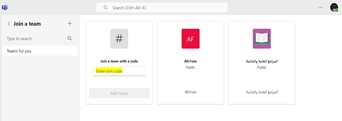
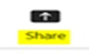

أولا: أسئلة الاختيار من متعدد
1. يعرف دمج التكنولوجيا في التعليم بأنه جميع ما يأتي عدا .......
2. من أهمية دمج التكنولوجيا في التعليم .........
3. يعد.............. من أهداف دمج التكنولوجيا في التعليم
4. يعد ....... من متطلبات دمج التكنولوجيا في التعليم
5. يعد..........أحد مقومات نجاح دمج التكنولوجيا في التعليم
6. تعرف مهارات دمج التكنولوجيا في التعليم بأنها ........
7. يحقق التدريب على أهمية مهارات دمج التكنولوجيا.............
8. جميع ما يأتي يعد من إحدى مهارات الاتصال الالكتروني عدا......
9. جميع ما يأتي يعد من مهارات التقويم الالكتروني عدا........
10. تتضمن مهارة الثقافة الرقمية ثلاث مهارات منها مهارة.......
11. تعد ...... إحدى مهارات التصميم التعليمي كأحد مهارات دمج التكنولوجيا في التعليم
12.تعد ...... إحدى المهارات الفرعية لمرحلة التحليل في التصميم التعليمي
. 13. ... تعد من أهم المهارات الفرعية لمرحلة التصميم في التصميم التعليمي
144. يعد....... من مهارات مرحلة التطوير في التصميم التعليمي
15.إذا أردت تسجيل الدخول لأول مرة في منصة Teams يتم الضغط على أمر.......
16.تعتبر ......إحدى مكونات واجهة العمل في منصة Teams
17.لإنشاء فصل (فريق) افتراضي في منصة Teams يتم اختيار أمر.....
18.تعبر الصورة الآتيه عن ....... 
19.لبدء الاتصال في منصة Teamsيتم اختيار أمر................
20.تعبر هذه الصورة عن أمر..... داخل اجتماع الفصل الافتراضي عبر منصة Teams 
21.يستخدم الأمر .....عند ارسال الرسالة في منصة Teams
22.لتحميل الملفات داخل الفصل الافتراضي عبر منصة Teams.يتم اختيار أمر....
32.يستخدم هذا الامر في منصة Teams ل......
24.يستخدم أمر .....لإدارة الفصل الافتراضي في منصة Teams
25.لمشاركة الفصل الافتراضي عبر منصة Teams يتم الضغط على زر.... لاختيار رمز الفريق وارساله للطلبة
26.لإنشاء قناة داخل الفصل الافتراضي يتم الضغط على Add Channel. واختيار أمر....
27.لإضافة أعضاء في منصة Teams يتم اختيار أمر ....
28. لحذف فريق في منصة Teams يتم الضغط على أمر ......
29.لتسجيل الدخول الى Google Form يتم اختيار أمر.................
30.تعبر هذه الصورة عن في Google Form
31.يعد...............من مكونات واجهة العمل في Google Form
32.لإدراج صورة للاختبار في منصة Google Form . يتم اختيار أمر.....
33.لإضافة أسئلة للاختبار في Google Form يتم اختيار أمر..... .
34.تعبر هذه الصورة عن إضافة....
.35لإضافة قسم للاختبار في Google Form يتم اختيار رمز..... .
36.لتغيير مظهر الاختبار. في Google Formيتم اختيار......
37.لنسخ سؤال داخل الاختبار في Google Formيتم اختر أمر......
38.لحذف سؤال داخل الاختبار في Google Formيتم اختر أمر......
39.يستخدم الامر .............. في تنزيل الردود في جوجل فورم على هيئة شيت اكسيل
40.تعبر هذه الصورة عن.... في Google form
41.تعبر هذه الصورة عن.... في Google form
42.لتسجيل الدخول في Mendeley يتم اختيار أمر...
43. تتمثل واجهة العمل في منصة Mendeley على جميع ماسبق عدا...
44 .شريط......... يوجد به اسم المنصة وأزرر الاغلاق والتصغير
45.لإنشاء مكتبة بداخلها كتب ومراجع في Mendeley يتم الضغط على أمر Refrences....واختيار Import Library
.46تحتوى قائمة Libraryفي Mendeleyعلى......
.47لإنشاء مكتبة بداخلها كتب ومراجع في Mendeley يتم الضغط على أمر Refrences....واختيار Import Library
48.لانشاء مجموعات في منصة Mendeley يتم اختيار أمر...
49.لعمل دعوة للباحثين للتعاون فيما بينهم فيMendeley يتم الضغط على Group واختيار أمر ....
50.لتغيير نمط اقتباس مرجع معين في Mendeley يتم الضغط على أمر …….
51.لحذف مجموعة فيMendeleyيتم الضغط على Group واختيار أمر...
ثانيا: من نوع أسئلة الصواب والخطأ
1. يعرف دمج التكنولوجيا في التعليم بأنه دمج بين التعلم الإلكتروني والتعليم التقليدي فقط
2. تكمن أهمية دمج التكنولوجيا في التعليم في خلق بيئة تفاعلية بين المتعلمين وبعضهم
3. من أهداف دمج التكنولوجيا في التعليم تطوير المحتوى الرقمي
4. تعد مختبرات الحواسب الآلية احد متطلبات دمج التكنولوجيا في التعليم
5. يعرف مفهوم مهارات دمج التكنولوجيا في التعليم بأنه توظيف وتفعيل الأدوات التقنية المتمثلة في الحاسب الآلي وتطبيقاته بالإضافة الى وجود بعض المهارات اللازمة
6. يعد اكتساب المتدربين مزيد من الثقة من أهمية التدريب على مهارات دمج التكنولوجيا في التعليم
7. تعد مهارات الثقافة الرقمية إحدى مهارات دمج التكنولوجيا في التعليم
8. يتم في مرحلة التنفيذ تجريب الموقع/ البرنامج/ الكتاب التعليمي الذي تم إنتاجه، والوقوف على أية مشكلات قد تواجه استخدامه
9. يتم الحكم على مدى جاهزية الموقع/ البرنامج / الكتاب التعليمي للاستخدام وذلك بإجراء التعديلات أو حل المشكلات التي صادفت تجريبه في مرحلة التنفيذ
10.لإنشاء الواجبات في منصة Teams يتم الضغط على تبويب Homework
11.تساعدك اعدادات الملفات المحملة في منصة Teams من مشاركة الملف بسهولة
12.توفر منصة Teams مجموعة من التطبيقات المساعدة التي يمكن إضافتها مباشرة داخل المنصة
13.يستخدم أمر Exit team في مغادرة الفصل الافتراضي في منصة Teams
14.لابد من التأكد من قرار الحذف، حيث أن هذه الخطوة قد تكون غير قابلة للتراجع بعد إتمامها
15.يعد قسم الأسئلة وكل ما يتعلق بها من مكونات واجهة العمل في Google Form
16.من السهل تغيير اسم الاختبار في منصة Teams
17.يستخدم امر Randomise options لترتيب الخيارات بشكل عشوائي في Google Form
18. لايمكن إضافة قسم في Google Form
19.يتيح Google Form تنزيل الردود على هيئة شيت اكسيل
20.يحتوى شريط القوائم في Mendeley على مكتبة تحوى جميع المراجع والمصادر
21.إضافة ملف في Mendeley يتم الضغط على أمر Add Refrences واختيار Export file
22.إضافة مجلد في Mendeley يتم الضغط على أمر Add Refrences واختيار Import Folder
23.لإضافة مرجع يدويا في Mendeley يتم الضغط على أمر Add References واختيار أمر Add Reference Automatic
24. من الممكن للمستخدم تعديل بيانات مرجع معين داخل Mendeley
25.يستخدمNew group في Mendeley لإضافة الملفات وتنظيمها داخل مجموعات
26.إذا لم تكن نتائج البحث غير مرغوب فيها، يمكن للمستخدم تعديل استعلام البحث عن طريق إضافة أو تغيير الكلمات الرئيسية، أو استخدام خيارات تصفية إضافية
27. لضبط خصائص المرجع أو المصدر في Mendeley يتم تحديد المرجع أولا ثم ضبط اعداداته
28. لتغيير نمط اقتباس مرجع معين في Mendeley يتم الضغط على أمر Add
29.لحذف مرجع فيMendeley يتم الضغط على المرجع كليك يمين واختيار أمر Delete Group